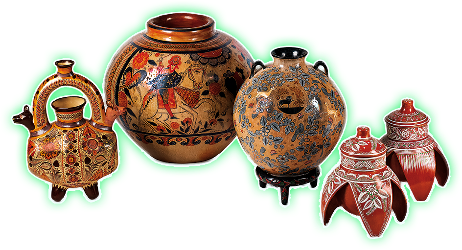
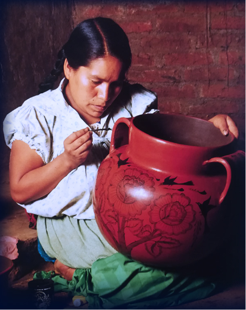
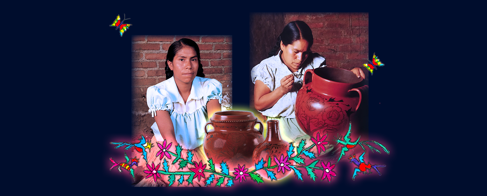
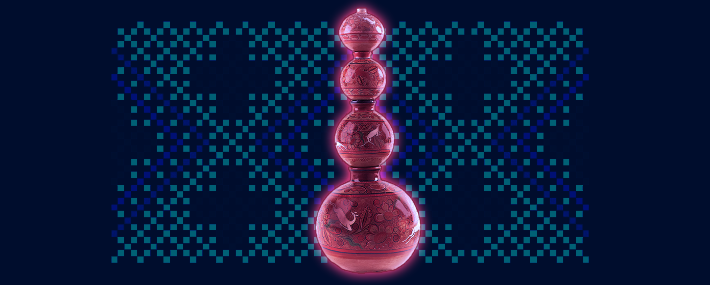
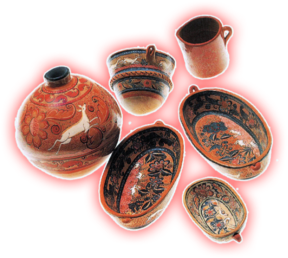
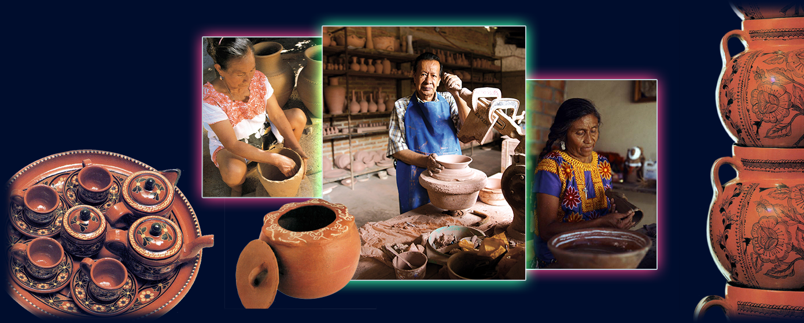

Hola, yo soy Elena.
Soy de la localidad de Huáncito, pertenece al estado de Michoacán.
Junto con mi hermana Bernardina trabajamos el arte en barro.

Yo soy Bernardina, desde pequeñitas, hemos estado en contacto con el barro.
Nuestra especialidad son los cántaros.
Se utilizan para almacenar y tener siempre agua fresca dentro de las casas, aún con mucho calor.
Transformamos con nuestras manos ideas que se nos vienen a la mente, creamos elementos de la naturaleza inspirados de nuestro entorno. como flores, colibrís y mariposas que imitan encajes.
Nuestros cántaros son de barro rojizo y se apilan para crear torres. Te vamos a enseñar más de este material
El barro es un material muy abundante en nuestro suelo, se ha utilizado desde tiempos muy antiguos para hacer objetos como; tinajas, cazuelas, vajillas y representar figuras.
Los diseños son inspiración de la naturaleza, por eso es común que veamos animales o plantas en sus grabados.
El barro puede tener muchos acabados, desde su color natural que nos recuerda la tierra de donde vino, o tener muchos detalles.
Se puede pintar a pincel, o decorarlo añadiendo pedacitos de barro con figuras. Algunos también se cuecen en distintos hornos. Hay muchas otras técnicas como el bruñido, el baño de vidrio o esmaltado.